Available Works

Adam
Limited edition Parian sculpture
Angel Hugging Baby
25 x 16½ x 30 Parian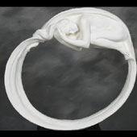
Circle of Life
View artwork details
Compassion
View artwork details
Contemplation
View artwork details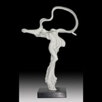
Dance of Beauty
15½ x 7¾ x 25
Dance of Passion
Limited Edition Parian II size 100
Devotion
Limited Edition Bronze size 50
Divine Lullaby
View artwork details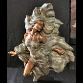
Dream Dancer
View artwork details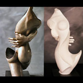
Embrace
View artwork details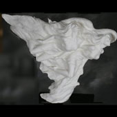
Eternal Friends
View artwork details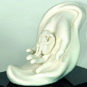
Eve
Limited edition Parian II sculpture
Exhaltation
View artwork details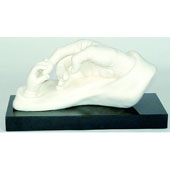
Generations
Limited edition Parian sculpture
Harmony
View artwork details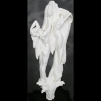
Life Spring
View artwork details
Love Everlasting
View artwork details
Nurture
View artwork details
Out of Eden
View artwork details
Peace
View artwork details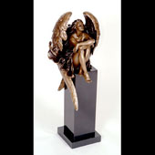
Reflection
View artwork details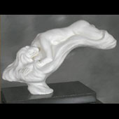
Repose
View artwork details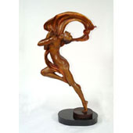
Spirit of Dance
View artwork details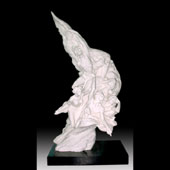
The Dawning
36 x 27 x 69½ Parian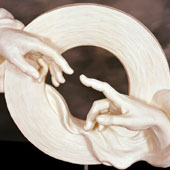
The Touch of Love
View artwork details
To Sleep, Perchance to Dream
View artwork details
Transcendance
View artwork details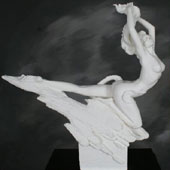
Transformation
View artwork details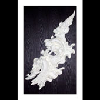